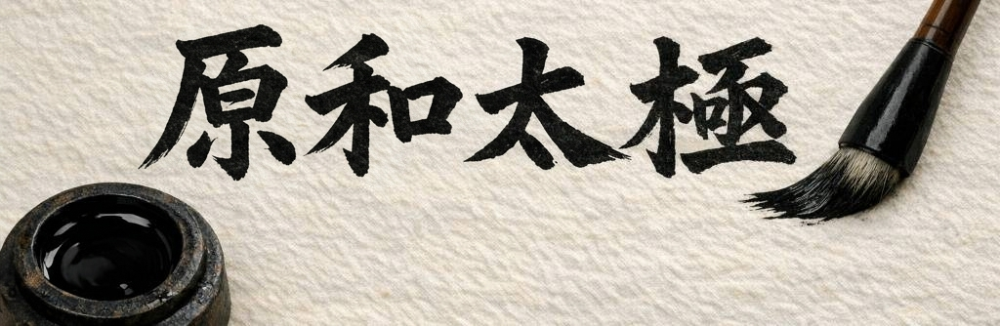

Yuan He Tai Ji es el resultado de más de dos décadas de práctica, estudio y reflexión en torno al Tai Ji Quan.
Mi camino se ha visto profundamente influido por la enseñanza del maestro Haoqing Liu, con quien aprendí durante más de quince años. A través de su transmisión conocí una tradición con matices que integra la herencia del estilo Yang de la línea de Niu Chunming, el enfoque de Hong Junsheng y principios del Qi Gong taoísta, conformando un marco de práctica amplio y coherente.
A lo largo de estos años también he explorado otras líneas, autores y enfoques, contrastando métodos y formas de entender el arte. De ese recorrido surgió una manera personal de organizar, interpretar y transmitir la práctica, pensada para facilitar su comprensión en nuestro contexto y reducir la dependencia de términos chinos excesivamente abiertos o polisémicos que suelen generar interpretaciones ambiguas o contradictorias.
Yuan He Tai Ji es una propuesta metodológica para el estudio y la práctica del Tai Ji Quan, construida sobre la base transmitida por el maestro Haoqing Liu y enriquecida con mi experiencia como practicante, docente e investigador.
No pretende constituir un nuevo estilo ni establecer un sistema independiente. Su propósito es ofrecer un enfoque claro, estructurado y fiel a los principios tradicionales, integrando herramientas de análisis actuales y una mirada crítica frente a los dogmatismos infundados y a la enorme cantidad de información y desinformación que circula sobre este arte.
Todo ello se plantea desde una perspectiva funcional y pedagógica, orientada a hacer el trabajo más comprensible y verificable sin perder profundidad ni fidelidad a sus fundamentos. En esencia, aspira a ser un camino ordenado para quienes buscan una práctica rigurosa y reflexiva, capaz de mantener vivo el espíritu clásico mientras dialoga con el presente.
Esta guía no pretende establecer una verdad definitiva ni presentarse como una autoridad última. Es una forma concreta de ordenar el estudio y leer los conceptos clásicos a partir de años de práctica, enseñanza y contraste.
No busca sustituir otras visiones ni excluir otros enfoques, sino ofrecer una herramienta útil tanto para quienes se inician como para practicantes con experiencia que deseen ampliar, contrastar o afinar su criterio.
Mi deseo es que esta web acompañe ese recorrido personal: si ayuda a observar con mayor claridad, practicar con más criterio y profundizar en los principios del Tai Ji Quan, habrá cumplido su propósito.